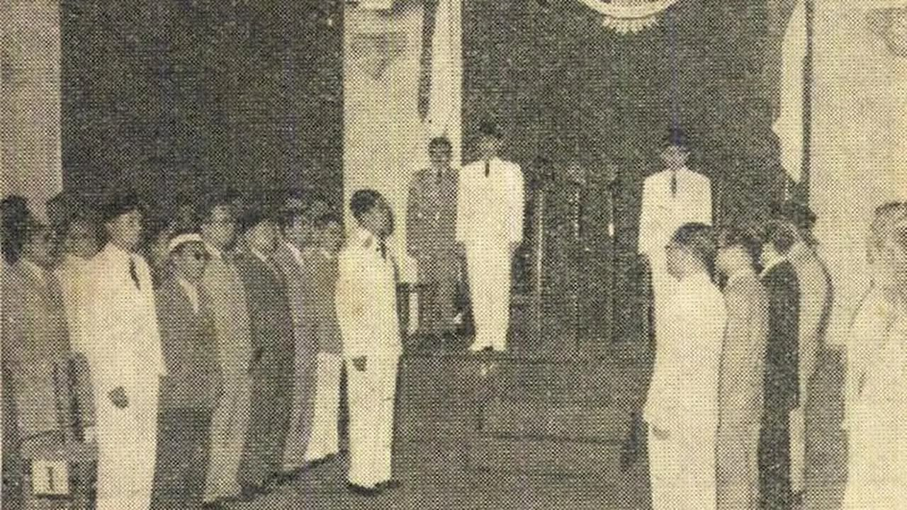
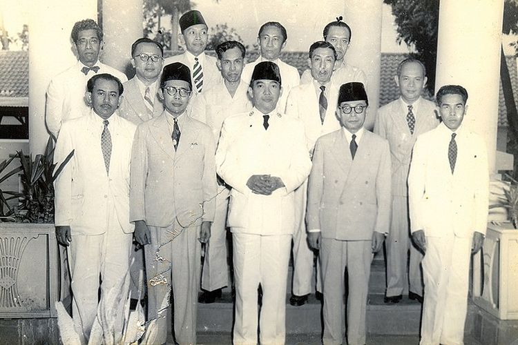
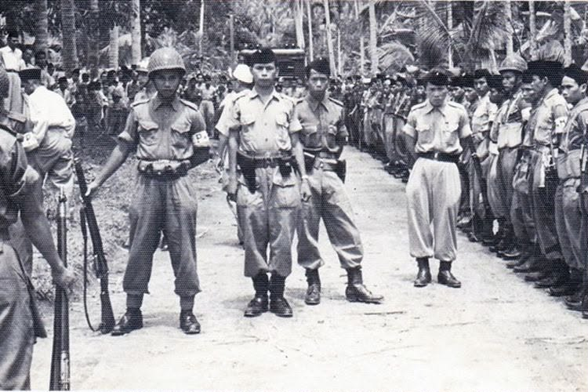
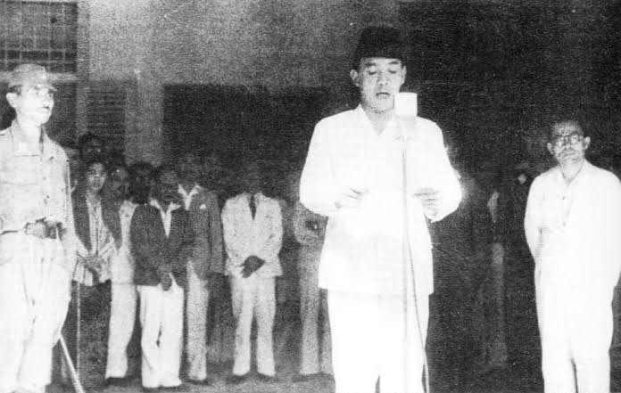

Latar Belakang Transisi Politik
Masa Demokrasi Liberal (1950–1959) ditandai oleh ketidakstabilan politik yang sangat tinggi akibat persaingan antar-partai di parlemen, pergantian kabinet yang terlampau cepat, serta ketidakmampuan Konstituante menyusun UUD baru.

Instabilitas Kabinet
Selama 9 tahun Demokrasi Liberal, Indonesia mengalami 7 kali pergantian kabinet. Rata-rata usia kabinet hanya bertahan sekitar 1 tahun, sehingga program pembangunan ekonomi nasional tidak berlanjut.

Kegagalan Konstituante
Konstituante hasil Pemilu 1955 bertugas merumuskan UUD baru. Perdebatan ideologis yang sengit antara kelompok Islam dan Pancasila memicu kebuntuan politik (deadlock) bertahun-tahun.

Pemberontakan Daerah
Kekecewaan terhadap pemerintah pusat memicu pembentukan dewan-dewan militer daerah serta pemberontakan PRRI di Sumatra dan Permesta di Sulawesi yang mengancam disintegrasi bangsa.

Gagasan Konsepsi Presiden 1957
Pada 21 Februari 1957, Presiden Soekarno mengusulkan konsepsi "Demokrasi Terpimpin" dan Kabinet Gotong Royong sebagai solusi atas kegagalan sistem parlementer ala Barat.
Dekrit Presiden 5 Juli 1959
Klik kartu di bawah ini untuk melihat detail 3 keputusan mendasar dalam Dekrit Presiden:
1. Pembubaran Konstituante
Klik untuk balikPembubaran Konstituante
Dewan Konstituante dibubarkan karena dinilai tidak mampu lagi menyelesaikan tugas utamanya menyusun UUD baru bagi Republik Indonesia.
2. Berlakunya UUD 1945
Klik untuk balikBerlakunya UUD 1945
UUDS 1950 tidak berlaku lagi dan Indonesia secara resmi kembali menggunakan UUD 1945 sebagai dasar hukum tertinggi negara.
3. Pembentukan MPRS & DPAS
Klik untuk balikPembentukan MPRS & DPAS
Pembentukan Majelis Permusyawaratan Rakyat Sementara (MPRS) serta Dewan Pertimbangan Agung Sementara (DPAS) dalam waktu singkat.
Peta Kekuatan Politik Nasional
Struktur politik pada era ini bertumpu pada **Segitiga Kekuatan Politik**. Klik tiap pilar di bawah ini untuk penjelasannya:
Presiden Soekarno — Poros Utama & Pemegang Keseimbangan
Peran Utama: Kepala Negara & Pemerintah dengan otoritas mutlak.
- Konsep NASAKOM: Soekarno menggagas pilar Nasakom (Nasionalisme, Agama, Komunisme) untuk menyatukan tiga ideologi besar agar tidak saling menghancurkan.
- Politik Imbang (Check and Balance): Soekarno menempatkan dirinya di tengah, memanfaatkan PKI untuk mengimbangi militer (TNI-AD) dan sebaliknya.
- Pusat Kekuasaan: Lembaga-lembaga negara (DPR-GR, MPRS, DPAS) tunduk di bawah instruksi eksekutif presiden.
TNI Angkatan Darat — Kekuatan Sosial-Politik & Anti-Komunis
Peran Utama: Pengaman kedaulatan serta kekuatan politik sipil-militer.
- Doktrin Jalan Tengah: Jenderal A.H. Nasution mencetuskan gagasan bahwa militer berhak terlibat aktif dalam urusan sosial, politik, dan pemerintahan.
- Penumpasan Gerakan Daerah: Keberhasilan TNI-AD menumpas DI/TII dan PRRI/Permesta memperkuat posisi tawar militer di pemerintahan.
- Benteng Penyeimbang PKI: TNI-AD secara konsisten menolak usulan PKI seperti pembentukan "Angkatan Kelima" (buruh/petani bersenjata).
PKI — Kekuatan Partai Massa & Propaganda
Peran Utama: Partai politik akar rumput yang memanfaatkan dukungan Soekarno.
- Mendukung Ajaran Presiden: PKI selalu berada di garda terdepan mendukung program-program Soekarno seperti Pembebasan Irian Barat dan Konfrontasi Malaysia.
- Ormas Akar Rumput: Menghimpun massa besar melalui Barisan Tani Indonesia (BTI), SOBSI (buruh), Gerwani, dan Pemuda Rakyat.
- Isolasi Lawan Politik: Menggunakan isu "Kapitalis Birokrat" dan "Kontra-Revolusi" untuk menundukkan penentangnya.
Ciri Utama & Penyimpangan Demokrasi Terpimpin
Klik pada setiap baris di bawah untuk membuka detail informasi:
Melalui Ketetapan MPRS No. III/MPRS/1963, Presiden Soekarno diangkat sebagai Presiden Seumur Hidup. Hal ini bertentangan dengan UUD 1945 pasal 7 yang mengatur pembatasan masa jabatan presiden.
Presiden membubarkan DPR hasil Pemilu 1955 pada Maret 1960 karena DPR menolak RAPBN yang diajukan pemerintah. Presiden lalu membentuk DPR-Gotong Royong (DPR-GR) yang anggotanya ditunjuk langsung oleh Presiden.
Partai Masyumi dan PSI dibubarkan oleh pemerintah pada tahun 1960. Surat kabar seperti Indonesia Raya dan Pedoman yang bersikap kritis dilarang terbit untuk menjaga hegemoni pemerintah.
Indonesia keluar dari PBB pada 1965 dan membentuk poros Jakarta-Peking (Beijing). Pemerintah membangun proyek megah "Mercusuar" seperti Stadion GBK, Monas, dan Hotel Indonesia di tengah kondisi krisis ekonomi nasional.
Kelompok 5
Tim Penyusun & Pembuat Website Sejarah

Azka Ramadhani
No. Absen: 05Kiki Rahmadhani
No. Absen: 15